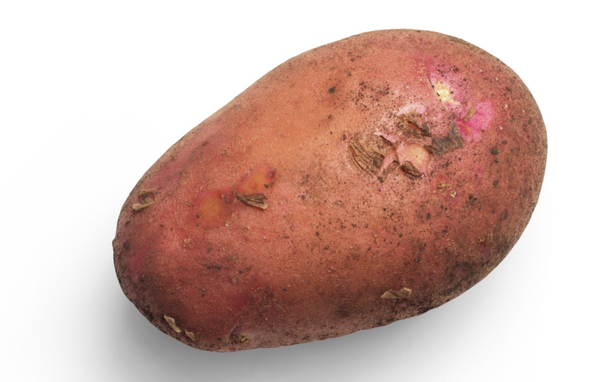
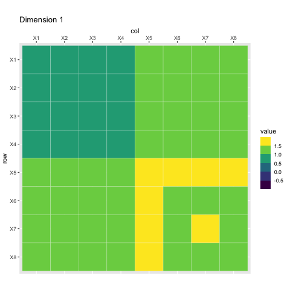
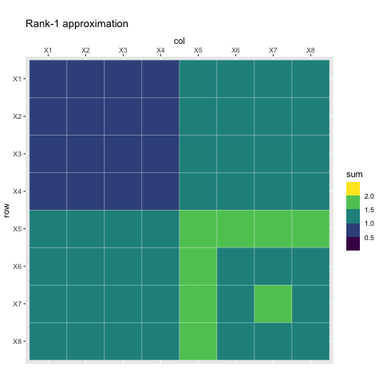
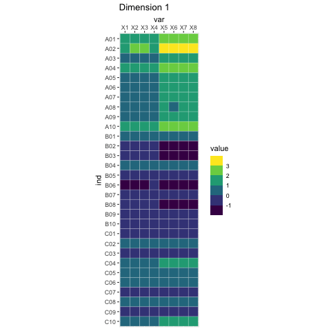
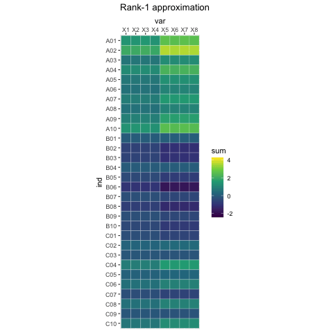

xtmp <- readxl::read_excel("../data/simul.xlsx")
x <- as.matrix(xtmp[, -1])
rownames(x) <- xtmp$IndSingular Value Decomposition
Some mental images
Potato Chips Analysis

Whale versus krill: this is you (credit: Allison Horst)
Whale versus krill: this is your data (credit: Allison Horst)
The tri-force of PCA
Beautiful illustration
Screeplot, versus individual map, versus circle of correlation. With the associated theoretical concepts: inertia (multivariate variance), distance between individuals, and angles between
Example data
Example screeplot
Example individual map
Example circle of correlation
Vocabulary
French versus English
“Aaaaah, mais ACP en fait c’est la PCA !”
(Anonymous student, after 6 hours of teaching PCA in French)
| English | French |
|---|---|
| PCA = principal component analysis | ACP = analyse en composantes principales |
| SVD = singular value decomposition | SVD = décomposition en valeurs singulières |
| EVD = eigenvalue decomposition | décomposition en éléments propres |
| ICA = independent component analysis | ICA = analyse en composantes indépendantes |
| MDS = multidimensional scaling | MDS = multidimensional scaling |
R vocabulary
Base methods:
eigenfor eigenvalue decomposition,svdfor singular value decomposition,prcompandprincompfor PCA,biplot
Nice packages:
FactoMineR:PCA,MFA,CA,MCAand associates. In earlier versions, the graphs were “crude”…factoextra: “helper” package to make beautiful plots, and much more!ade4: more than “one block” type of analyses. Made by ecologists so \(\Rightarrow\) PCOA, coinertia analysis, STATIS, etc.ExPosition: made for psychometricians (they like PLS)
And a few nice books and papers
books and papers
A little bit of Math
Notations
(non-universal) Conventions: matrices and vectors are bold
- \(I\) = number of observations, \(J\) = number of variables (only quantitative)
- \(i\) for an individual observation, and \(j\) for a single variable
- \(\mathbf{X}\) = data matrix, with \(n\) rows and \(p\) columns, sometimes already centered, and scaled, to make our life easy
- \(\mathbf{X}_j\) = variable \(j\), and \(j\)th column of \(\mathbf X\)
- \(\mathbf{w}\) a set of weights
A little detour: matrix multiplication
Take a pen and paper, and do this multiplication:
[ ]
PCA
“Find a linear combination of the columns of the data that would capture the most information.”
In mathematical words, find
[ = w_1_1 + + w_p_p ]
that maximizes… wait a minute! What are the dimensions?
- \(\mathbf X\): \(I\) rows and \(J\) columns,
- \(\mathbf w\): \(J\) rows and \(1\) columns,
- \(\mathbf{Xw}\): \(I\) rows and \(1\) column.
The mathematical translation of the intuitions behind PCA
Most popular intuition of PCA: how does it translate?
“PCA creates a linear combination of variables that maximizes variance.”
[ _{||_2^2 = 1} () ]
- Why \(\|\mathbf{w}\|_2 = 1\)?
- Dirty trick: \(\text{var}(\mathbf{X}\mathbf{w}) = \mathbf{w}^\top\mathbf{X}^\top\mathbf{X}\mathbf{w}\)
Least “well-known” intuition of PCA: how does it translate?
“PCA creates a linear combination of variables that maximizes correlation.”
[ {w} {j=1}^p (, _j)^2 ]
Second least “well-known” intuition of PCA: how does it translate?
“PCA creates the best lower rank approximation of the covariance matrix.”
[ _{|w|_2^2 = 1} | ^- ^|_F^2 ]
- \(\frac{1}{n}\mathbf{X}^\top\mathbf{X}\)
- \(\lambda\): the [blank] of the covariance matrix
- \(\mathbf{w}\): the [blank] of the covariance matrix
A little image
Rank-1 approximations

Increasing rank approximations

We can do the same kind of magic with the data itself
Singular value decomposition can be used to approximate a rectangular matrix with a lower ranked matrix of the same dimension
[ _{|_2^2=||_2^2=1} | - ^|_F^2 ]
- \(\delta\): singular value
- \(\mathbf{u}\): left singular vector
- \(\mathbf{w}\): right singular vector
Rank 1 approximation
Rank-1 approximations

Increasing rank approximations

Constraining the SVD
LASSO
LASSO is a (relatively) recent technique originally intended for regression problems:
\[ \arg\min_{\boldsymbol{\beta}} \left\| \mathbf{y} - \mathbf{X}\boldsymbol{\beta} \right\|_2^2 \text{ such that } \|\boldsymbol{\beta}\|_1 \leq r \] or the dual form \[ \arg\min_{\boldsymbol{\beta}} \left\| \mathbf{y} - \mathbf{X}\boldsymbol{\beta} \right\|_2^2 + \lambda \|\boldsymbol{\beta}\|_1 \]
- the obtained weights are sparse (with zeros)
- the non-zeros coefficients correspond to important variables
- the result is biased
- selecting \(\lambda\) is done through cross-validation
Optimization problem
\[ \begin{aligned} (\delta_\ell, \mathbf{p}_\ell, \mathbf{q}_\ell) = \arg\min_{\boldsymbol{\beta}} \left\| \mathbf{X} - \delta\mathbf{p}^\top\mathbf{q} \right\|_2^2 \\ \text{ such that } \begin{cases} \mathbf{p}^\top\mathbf{M}\mathbf{p} = \mathbf{q}^\top\mathbf{W}\mathbf{q} = 1 \\ \mathbf{p}^\top\mathbf{M}\mathbf{p_{\ell^\prime}} = \mathbf{q}^\top\mathbf{W}\mathbf{q_{\ell^\prime}} = 0, \forall \ell^\prime < \ell \\ \|\mathbf{p}\|_1 \leq s_{\mathbf{p},\ell} \text{ and } \|\mathbf{q}\|_1 \leq s_{\mathbf{q},\ell} \end{cases} \end{aligned} \]
What are the parameters?
- \(\mathbf M\) and \(\mathbf W\) = masses, weights… so metrics
- \(s_{\mathbf{p},\ell}\) and \(s_{\mathbf{q},\ell}\) = sparsity parameters, between 1 (strong sparsity), and \(\sqrt{\text{dimension}}\) (no sparsity)